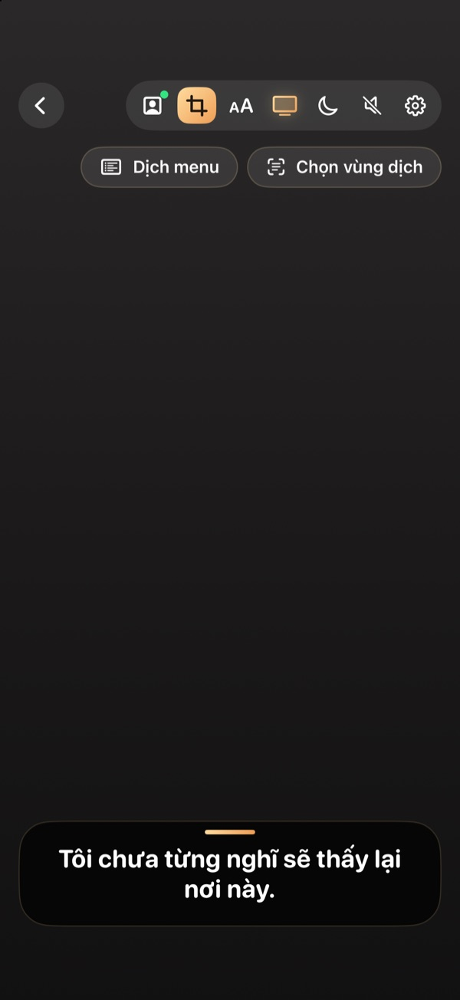
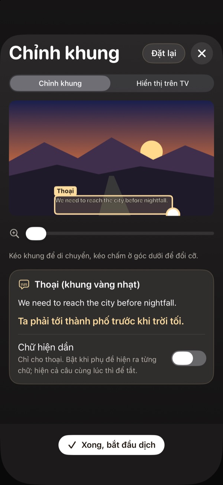
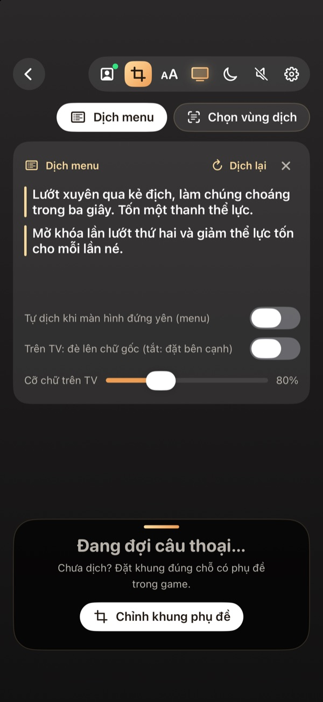

Dịch game PS5 sang tiếng Việt trên iPhone và điện thoại Android
Cập nhật ngày 3/11/2026
Sau khi ghép với PS5, bạn có thể chơi ngay trên điện thoại hoặc giữ tay cầm chơi trên TV và dùng điện thoại để chạy dịch.
Hai cách dùng điện thoại
Dịch khi chơi TV
PS5 vẫn hiện trên TV. Điện thoại nhận hình để đọc chữ, rồi hiện bản dịch trên điện thoại hoặc gửi lên TV đã cài app.

Chơi trên điện thoại
Hình game hiện trên điện thoại cùng phụ đề tiếng Việt, phù hợp khi TV đang bận hoặc bạn muốn chơi ở phòng khác trong nhà.
Chỉnh để dịch tốt hơn
- Bật phụ đề trong game và chọn cỡ chữ lớn nếu có.
- Kéo khung đọc chữ vừa đúng vùng phụ đề.
- Dùng Dịch AI và chọn game trong kho nếu bản của bạn có tính năng này.

Dịch menu và nhiệm vụ
Ngoài lời thoại, app có công cụ dịch menu và vùng chữ cho nhiệm vụ, vật phẩm hoặc lựa chọn hội thoại.

Tải app và xem hướng dẫn
Xem từng bước cho iPhone, iPad hoặc Android.
Câu hỏi thường gặp
iPhone cần phiên bản nào?
Hướng dẫn hiện ghi cần iOS 18 trở lên.
Có cần gói trả phí không?
Một số tính năng như Dịch AI và phụ đề trên TV có thể cần gói trả phí. Xem quyền lợi hiện tại trong app.
Có đọc bản dịch thành tiếng không?
Có, bạn có thể bật giọng đọc tiếng Việt trong app.
Xem thêm
Xem hướng dẫn cài đặt →Console Translator là dự án độc lập, không liên kết với Sony, LG hay Samsung. Tên game và nhãn hiệu thuộc về chủ sở hữu tương ứng.